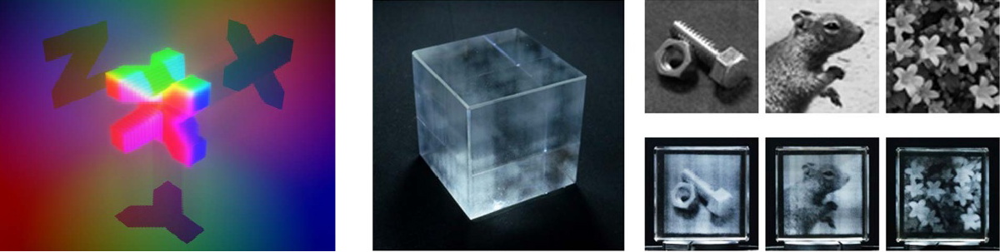

Hirotaka Nakayama, Atsushi Shiraki, Ryuji Hirayama, Nobuyuki Masuda, Tomoyoshi Shimobaba, and Tomoyoshi Ito,
Scientific Reports 3, 1931 (2013)
[Paper link].
|
|

|
|
We have developed an algorithm for recording multiple gradated two-dimensional projection patterns in a single three-dimensional object. When a single pattern is observed, information from the other patterns can be treated as background noise. The proposed algorithm has two important features: the number of patterns that can be recorded is theoretically infinite and no meaningful information can be seen outside of the projection directions. We confirmed the effectiveness of the proposed algorithm by performing numerical simulations of two laser crystals: an octagonal prism that contained four patterns in four projection directions and a dodecahedron that contained six patterns in six directions. We also fabricated and demonstrated an actual prototype laser crystal from a glass cube engraved by a laser beam. This algorithm has applications in various fields, including media art, digital signage and encryption technology.
|
| Sep. 2013 |
テレビ東京, ワールドビジネスサテライト (Japanese TV show), “場所で見え方変わる—立体ディスプレイ”.
|
| Sep. 2013 |
日刊工業新聞 (Japanese Newspaper), “見る位置で違う映像に—千葉大ディスプレイ開発”.
|
| Jun. 2011 |
日刊工業新聞 (Japanese Newspaper), “見る方向で違い—千葉大技術開発”.
|